Chicago baseball
White Sox
A little-more-than-casual but not-very-wonky statistical look at the current season
Great expectations for the good guys in black.
Updated Monday, April 10, at 1:19 p.m. Pybaseball gathers these from Baseball-reference.com.
Games
JUMP TO TOP | BATTERS | PITCHERS
On Sunday, Apr 9, the Sox lost a day game at the Pirates, 0 to 1, in 9 innings. The winning pitcher was Oviedo, losing pitcher was Kopech. Save: Bednar.
Next scheduled game: Monday, Apr 10, an away game at the Twins.
Summary results by team
| Team | Wins | Loses | Avg. Sox runs | Avg. runs against |
|---|---|---|---|---|
| Astros | 2 | 2 | 4.0 | 4.25 |
| Giants | 1 | 2 | 5.33 | 10.33 |
| Pirates | 1 | 2 | 6.67 | 6.33 |
Batters
JUMP TO TOP | GAMES | PITCHERS
Click the link under a player's name to get up-to-speed on a player at bat.
Hanser Alberto #26, SS
| Status (A = active) | A |
| Bats/Throws | R/R |
| Plate appearances | 9 |
| At bats | 9 |
| Hits | 3 |
| Home runs | 0 |
| Batting Avg. | 0.333 |
| Runs | 2 |
| RBI | 1 |
| On-base percent | 0.333 |
| Weighted OBP | 0.298 |
| Slugging % | 0.333 |
| Stolen bases | 0 |
| Caught stealing | 0 |
Other measures
| Weighted runs above avg. (wRAA) | -0.2 |
| Runs Above Replacement (RAR) | 0.3 |
| Fielding RAR | 0.2 |
| Wins above replacement (WAR) | 0.0 |
Tim Anderson #7, SS
| Status (A = active) | A |
| Bats/Throws | R/R |
| Plate appearances | 46 |
| At bats | 44 |
| Hits | 14 |
| Home runs | 0 |
| Batting Avg. | 0.318 |

| Runs | 9 |
| RBI | 4 |
| On-base percent | 0.348 |
| Weighted OBP | 0.342 |
| Slugging % | 0.432 |
| Stolen bases | 5 |
| Caught stealing | 0 |
Other measures
| Weighted runs above avg. (wRAA) | 0.7 |
| Runs Above Replacement (RAR) | 4.2 |
| Fielding RAR | 0.4 |
| Wins above replacement (WAR) | 0.4 |
Elvis Andrus #1, 2B
| Status (A = active) | A |
| Bats/Throws | R/R |
| Plate appearances | 41 |
| At bats | 38 |
| Hits | 6 |
| Home runs | 0 |
| Batting Avg. | 0.158 |
| Runs | 3 |
| RBI | 4 |
| On-base percent | 0.195 |
| Weighted OBP | 0.175 |
| Slugging % | 0.184 |
| Stolen bases | 2 |
| Caught stealing | 0 |
Other measures
| Weighted runs above avg. (wRAA) | -5.0 |
| Runs Above Replacement (RAR) | -3.9 |
| Fielding RAR | -1.0 |
| Wins above replacement (WAR) | -0.4 |
Andrew Benintendi #23, LF
| Status (A = active) | A |
| Bats/Throws | L/L |
| Plate appearances | 41 |
| At bats | 38 |
| Hits | 10 |
| Home runs | 0 |
| Batting Avg. | 0.263 |
| Runs | 7 |
| RBI | 2 |
| On-base percent | 0.317 |
| Weighted OBP | 0.288 |
| Slugging % | 0.316 |
| Stolen bases | 2 |
| Caught stealing | 0 |
Other measures
| Weighted runs above avg. (wRAA) | -1.2 |
| Runs Above Replacement (RAR) | -1.0 |
| Fielding RAR | -1.3 |
| Wins above replacement (WAR) | -0.1 |
Jake Burger #30, 1B
| Status (A = active) | A |
| Bats/Throws | R/R |
| Plate appearances | 8 |
| At bats | 8 |
| Hits | 3 |
| Home runs | 1 |
| Batting Avg. | 0.375 |
| Runs | 1 |
| RBI | 2 |
| On-base percent | 0.375 |
| Weighted OBP | 0.566 |
| Slugging % | 1.0 |
| Stolen bases | 0 |
| Caught stealing | 0 |
Other measures
| Weighted runs above avg. (wRAA) | 1.6 |
| Runs Above Replacement (RAR) | 1.6 |
| Fielding RAR | |
| Wins above replacement (WAR) | 0.2 |
Oscar Colas #22, OF
| Status (A = active) | A |
| Bats/Throws | L/L |
| Plate appearances | 36 |
| At bats | 33 |
| Hits | 10 |
| Home runs | 1 |
| Batting Avg. | 0.303 |
| Runs | 5 |
| RBI | 4 |
| On-base percent | 0.343 |
| Weighted OBP | 0.339 |
| Slugging % | 0.424 |
| Stolen bases | 2 |
| Caught stealing | 0 |
Other measures
| Weighted runs above avg. (wRAA) | 0.5 |
| Runs Above Replacement (RAR) | 1.3 |
| Fielding RAR | -0.5 |
| Wins above replacement (WAR) | 0.1 |
Romy Gonzalez #12, 2B
| Status (A = active) | A |
| Bats/Throws | R/R |
| Plate appearances | 13 |
| At bats | 13 |
| Hits | 3 |
| Home runs | 0 |
| Batting Avg. | 0.231 |
| Runs | 0 |
| RBI | 0 |
| On-base percent | 0.231 |
| Weighted OBP | 0.206 |
| Slugging % | 0.231 |
| Stolen bases | 1 |
| Caught stealing | 0 |
Other measures
| Weighted runs above avg. (wRAA) | -1.3 |
| Runs Above Replacement (RAR) | -0.7 |
| Fielding RAR | 0.1 |
| Wins above replacement (WAR) | -0.1 |
Yasmani Grandal #24, C
| Status (A = active) | A |
| Bats/Throws | S/R |
| Plate appearances | 31 |
| At bats | 26 |
| Hits | 7 |
| Home runs | 1 |
| Batting Avg. | 0.269 |
| Runs | 2 |
| RBI | 4 |
| On-base percent | 0.387 |
| Weighted OBP | 0.377 |
| Slugging % | 0.462 |
| Stolen bases | 0 |
| Caught stealing | 0 |
Other measures
| Weighted runs above avg. (wRAA) | 1.4 |
| Runs Above Replacement (RAR) | 2.6 |
| Fielding RAR | -0.1 |
| Wins above replacement (WAR) | 0.3 |
Eloy Jimenez #74, RF
| Status (A = active) | D10 |
| Bats/Throws | R/R |
| Plate appearances | 22 |
| At bats | 19 |
| Hits | 4 |
| Home runs | 0 |
| Batting Avg. | 0.211 |

| Runs | 2 |
| RBI | 3 |
| On-base percent | 0.318 |
| Weighted OBP | 0.292 |
| Slugging % | 0.316 |
| Stolen bases | 0 |
| Caught stealing | 0 |
Other measures
| Weighted runs above avg. (wRAA) | -0.6 |
| Runs Above Replacement (RAR) | -0.3 |
| Fielding RAR | |
| Wins above replacement (WAR) | 0.0 |
Yoan Moncada #10, 3B
| Status (A = active) | A |
| Bats/Throws | S/R |
| Plate appearances | 40 |
| At bats | 39 |
| Hits | 12 |
| Home runs | 2 |
| Batting Avg. | 0.308 |

| Runs | 4 |
| RBI | 5 |
| On-base percent | 0.325 |
| Weighted OBP | 0.378 |
| Slugging % | 0.564 |
| Stolen bases | 0 |
| Caught stealing | 0 |
Other measures
| Weighted runs above avg. (wRAA) | 1.8 |
| Runs Above Replacement (RAR) | 3.8 |
| Fielding RAR | 0.6 |
| Wins above replacement (WAR) | 0.4 |
Gavin Sheets #32, 1B
| Status (A = active) | A |
| Bats/Throws | L/L |
| Plate appearances | 19 |
| At bats | 15 |
| Hits | 6 |
| Home runs | 0 |
| Batting Avg. | 0.4 |
| Runs | 2 |
| RBI | 3 |
| On-base percent | 0.526 |
| Weighted OBP | 0.431 |
| Slugging % | 0.4 |
| Stolen bases | 0 |
| Caught stealing | 0 |
Other measures
| Weighted runs above avg. (wRAA) | 1.7 |
| Runs Above Replacement (RAR) | 1.9 |
| Fielding RAR | 0.0 |
| Wins above replacement (WAR) | 0.2 |
Andrew Vaughn #25, 1B
| Status (A = active) | A |
| Bats/Throws | R/R |
| Plate appearances | 41 |
| At bats | 33 |
| Hits | 9 |
| Home runs | 0 |
| Batting Avg. | 0.273 |
| Runs | 5 |
| RBI | 7 |
| On-base percent | 0.415 |
| Weighted OBP | 0.371 |
| Slugging % | 0.394 |
| Stolen bases | 0 |
| Caught stealing | 0 |
Other measures
| Weighted runs above avg. (wRAA) | 1.6 |
| Runs Above Replacement (RAR) | 0.8 |
| Fielding RAR | -1.4 |
| Wins above replacement (WAR) | 0.1 |
Seby Zavala #44, C
| Status (A = active) | A |
| Bats/Throws | R/R |
| Plate appearances | 10 |
| At bats | 10 |
| Hits | 3 |
| Home runs | 1 |
| Batting Avg. | 0.3 |
| Runs | 3 |
| RBI | 2 |
| On-base percent | 0.3 |
| Weighted OBP | 0.38 |
| Slugging % | 0.6 |
| Stolen bases | 1 |
| Caught stealing | 0 |
Other measures
| Weighted runs above avg. (wRAA) | 0.5 |
| Runs Above Replacement (RAR) | 1.4 |
| Fielding RAR | 0.1 |
| Wins above replacement (WAR) | 0.1 |
Pitchers
Click the link under a player's name to get acquainted with who's on the mound. Click here for a description of these stats and more.
Hanser Alberto #26, SS
| Status (A = active) | A |
| Bats/Throws | R/R |
| Wins | 0 |
| Losses | 0 |
| ERA | 21.6 |
| Caught stealing | 0 |
| Complete games | 0 |
| Shutouts | 0 |
| Saves | 0 |
| Blown saves | 0 |
Pitch types
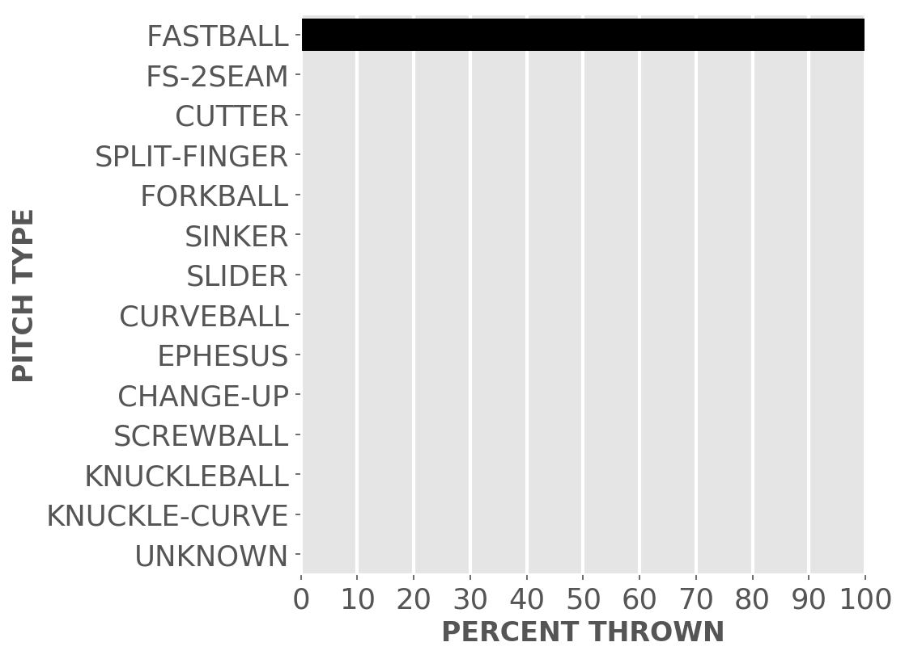Fastball = Four Seam and Unclassified Fastballs; FS-2seam = Two Seam Fastballs; Ephesuses are a really slow ball
| Average innings pitched | 0.6 |
| Strikeouts per 9 innings | 5.4 |
| Walks per 9 innings | 5.4 |
| Walks, hits per inning (WHIP) | 4.2 |
| Percent left on base | 53.6 |
| Percent first pitch strike | 58.3 |
Other measures
| Avg. run support | 3.0 |
| Opponents batting average | 0.545 |
| Batting avg. on balls in play | 0.556 |
| Fielding independent pitching | 11.8 |
| Win probability added (WPA) | 0.0 |
| Runs above replacement | -0.5 |
| WAR | -0.1 |
Aaron Bummer #39, P
| Status (A = active) | A |
| Bats/Throws | L/L |
| Wins | 0 |
| Losses | 0 |
| ERA | 0.0 |
| Caught stealing | 0 |
| Complete games | 0 |
| Shutouts | 0 |
| Saves | 0 |
| Blown saves | 0 |
Pitch types
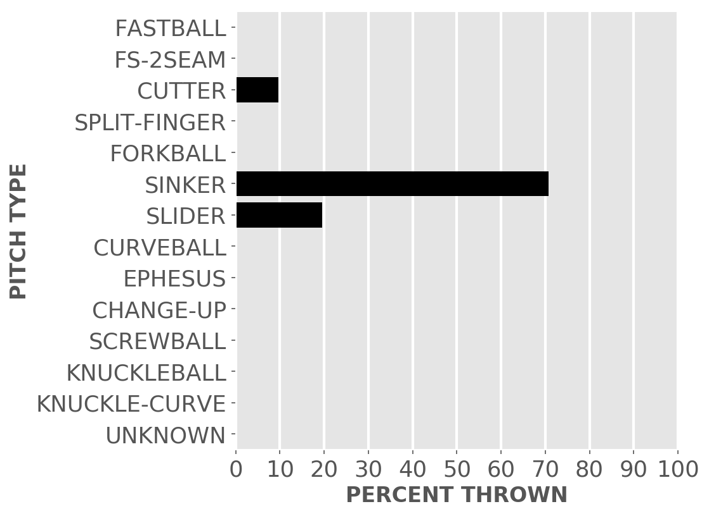Fastball = Four Seam and Unclassified Fastballs; FS-2seam = Two Seam Fastballs; Ephesuses are a really slow ball
| Average innings pitched | 0.8 |
| Strikeouts per 9 innings | 10.8 |
| Walks per 9 innings | 5.4 |
| Walks, hits per inning (WHIP) | 1.2 |
| Percent left on base | 100.0 |
| Percent first pitch strike | 50.0 |
Other measures
| Avg. run support | 2.0 |
| Opponents batting average | 0.167 |
| Batting avg. on balls in play | 0.25 |
| Fielding independent pitching | 2.8 |
| Win probability added (WPA) | -0.03 |
| Runs above replacement | 0.8 |
| WAR | 0.1 |
Dylan Cease #84, P
| Status (A = active) | A |
| Bats/Throws | R/R |
| Wins | 1 |
| Losses | 0 |
| ERA | 1.59 |
| Caught stealing | 2 |
| Complete games | 0 |
| Shutouts | 0 |
| Saves | 0 |
| Blown saves | 0 |
Pitch types
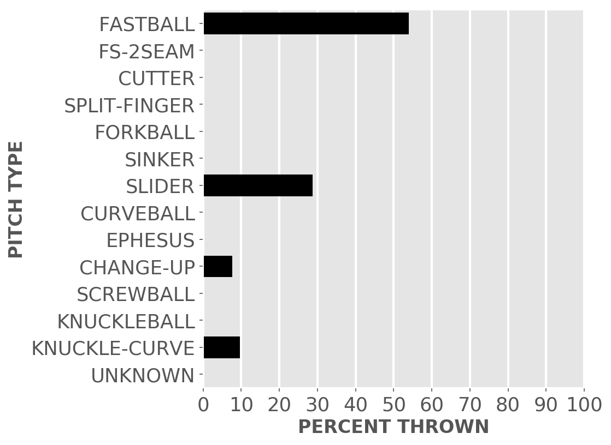Fastball = Four Seam and Unclassified Fastballs; FS-2seam = Two Seam Fastballs; Ephesuses are a really slow ball
| Average innings pitched | 5.6 |
| Strikeouts per 9 innings | 14.29 |
| Walks per 9 innings | 3.97 |
| Walks, hits per inning (WHIP) | 0.71 |
| Percent left on base | 92.1 |
| Percent first pitch strike | 70.5 |
Other measures
| Avg. run support | 4.0 |
| Opponents batting average | 0.079 |
| Batting avg. on balls in play | 0.105 |
| Fielding independent pitching | 2.96 |
| Win probability added (WPA) | 0.47 |
| Runs above replacement | 3.0 |
| WAR | 0.3 |
Mike Clevinger #52, P
| Status (A = active) | A |
| Bats/Throws | R/R |
| Wins | 2 |
| Losses | 0 |
| ERA | 3.48 |
| Caught stealing | 2 |
| Complete games | 0 |
| Shutouts | 0 |
| Saves | 0 |
| Blown saves | 0 |
Pitch types
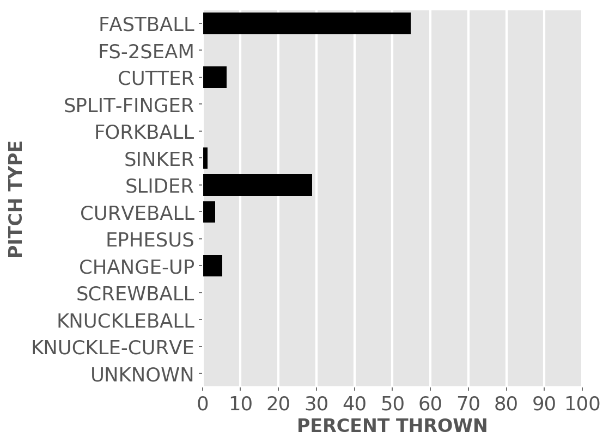Fastball = Four Seam and Unclassified Fastballs; FS-2seam = Two Seam Fastballs; Ephesuses are a really slow ball
| Average innings pitched | 5.0 |
| Strikeouts per 9 innings | 7.84 |
| Walks per 9 innings | 4.35 |
| Walks, hits per inning (WHIP) | 1.55 |
| Percent left on base | 77.8 |
| Percent first pitch strike | 55.1 |
Other measures
| Avg. run support | 9.0 |
| Opponents batting average | 0.262 |
| Batting avg. on balls in play | 0.333 |
| Fielding independent pitching | 3.69 |
| Win probability added (WPA) | 0.17 |
| Runs above replacement | 2.2 |
| WAR | 0.2 |
Jake Diekman #55, P
| Status (A = active) | A |
| Bats/Throws | R/L |
| Wins | 0 |
| Losses | 1 |
| ERA | 9.64 |
| Caught stealing | 0 |
| Complete games | 0 |
| Shutouts | 0 |
| Saves | 0 |
| Blown saves | 1 |
Pitch types
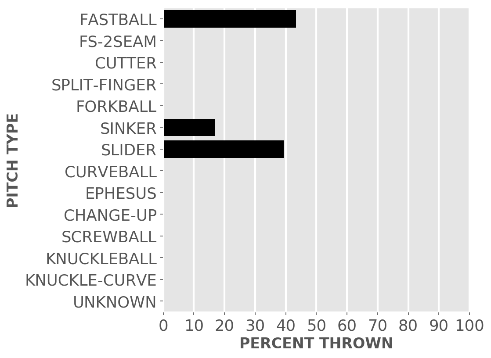Fastball = Four Seam and Unclassified Fastballs; FS-2seam = Two Seam Fastballs; Ephesuses are a really slow ball
| Average innings pitched | 0.8 |
| Strikeouts per 9 innings | 9.64 |
| Walks per 9 innings | 7.71 |
| Walks, hits per inning (WHIP) | 1.71 |
| Percent left on base | 37.5 |
| Percent first pitch strike | 42.9 |
Other measures
| Avg. run support | 0.0 |
| Opponents batting average | 0.235 |
| Batting avg. on balls in play | 0.333 |
| Fielding independent pitching | 3.83 |
| Win probability added (WPA) | -0.63 |
| Runs above replacement | 0.5 |
| WAR | 0.1 |
Lucas Giolito #27, P
| Status (A = active) | A |
| Bats/Throws | R/R |
| Wins | 0 |
| Losses | 0 |
| ERA | 9.0 |
| Caught stealing | 2 |
| Complete games | 0 |
| Shutouts | 0 |
| Saves | 0 |
| Blown saves | 0 |
Pitch types
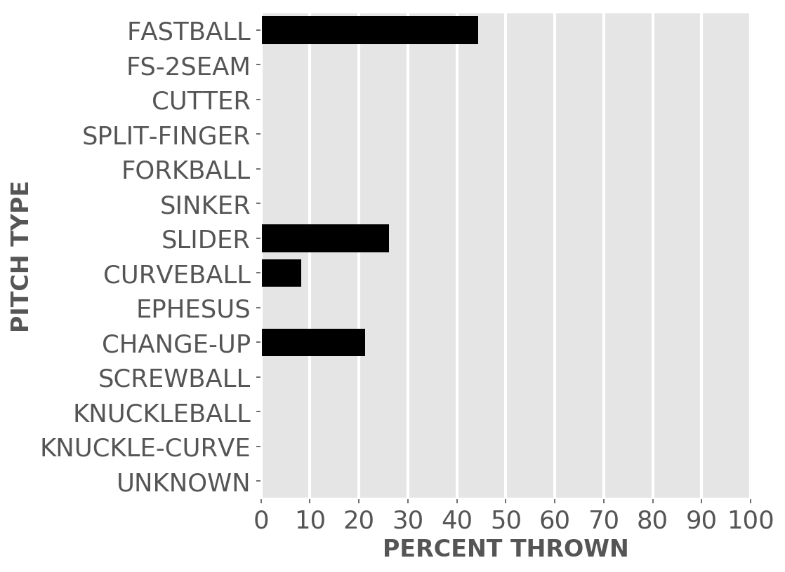Fastball = Four Seam and Unclassified Fastballs; FS-2seam = Two Seam Fastballs; Ephesuses are a really slow ball
| Average innings pitched | 4.5 |
| Strikeouts per 9 innings | 9.0 |
| Walks per 9 innings | 1.0 |
| Walks, hits per inning (WHIP) | 2.0 |
| Percent left on base | 55.6 |
| Percent first pitch strike | 60.9 |
Other measures
| Avg. run support | 10.0 |
| Opponents batting average | 0.386 |
| Batting avg. on balls in play | 0.455 |
| Fielding independent pitching | 4.95 |
| Win probability added (WPA) | -0.71 |
| Runs above replacement | 0.5 |
| WAR | 0.1 |
Kendall Graveman #49, P
| Status (A = active) | A |
| Bats/Throws | R/R |
| Wins | 1 |
| Losses | 1 |
| ERA | 7.36 |
| Caught stealing | 0 |
| Complete games | 0 |
| Shutouts | 0 |
| Saves | 0 |
| Blown saves | 0 |
Pitch types
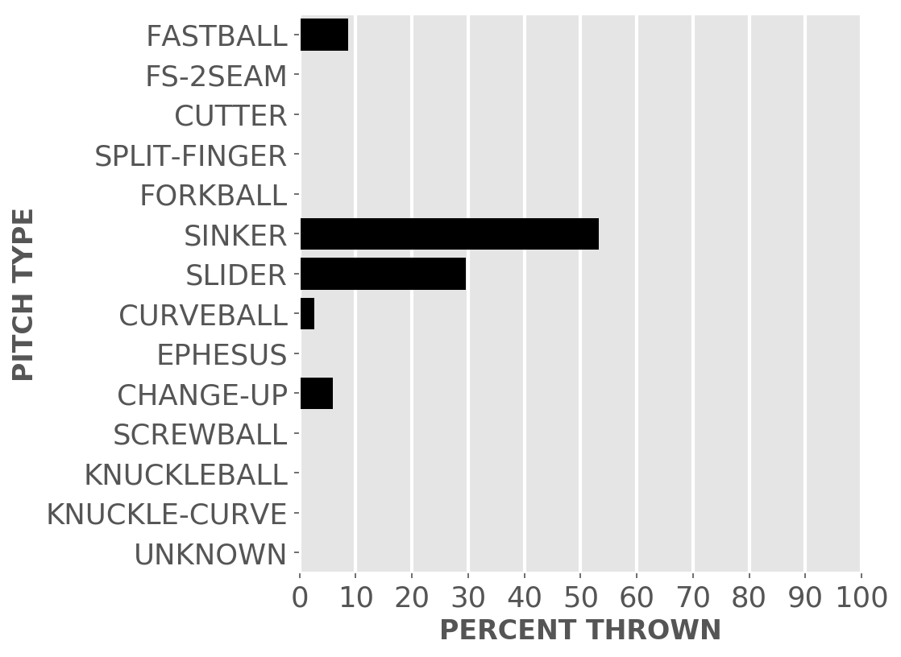Fastball = Four Seam and Unclassified Fastballs; FS-2seam = Two Seam Fastballs; Ephesuses are a really slow ball
| Average innings pitched | 0.8 |
| Strikeouts per 9 innings | 7.36 |
| Walks per 9 innings | 7.36 |
| Walks, hits per inning (WHIP) | 1.91 |
| Percent left on base | 57.1 |
| Percent first pitch strike | 62.5 |
Other measures
| Avg. run support | 4.0 |
| Opponents batting average | 0.308 |
| Batting avg. on balls in play | 0.4 |
| Fielding independent pitching | 4.22 |
| Win probability added (WPA) | 0.1 |
| Runs above replacement | 0.2 |
| WAR | 0.0 |
Joe Kelly #17, P
| Status (A = active) | A |
| Bats/Throws | R/R |
| Wins | 0 |
| Losses | 1 |
| ERA | 10.13 |
| Caught stealing | 0 |
| Complete games | 0 |
| Shutouts | 0 |
| Saves | 0 |
| Blown saves | 0 |
Pitch types
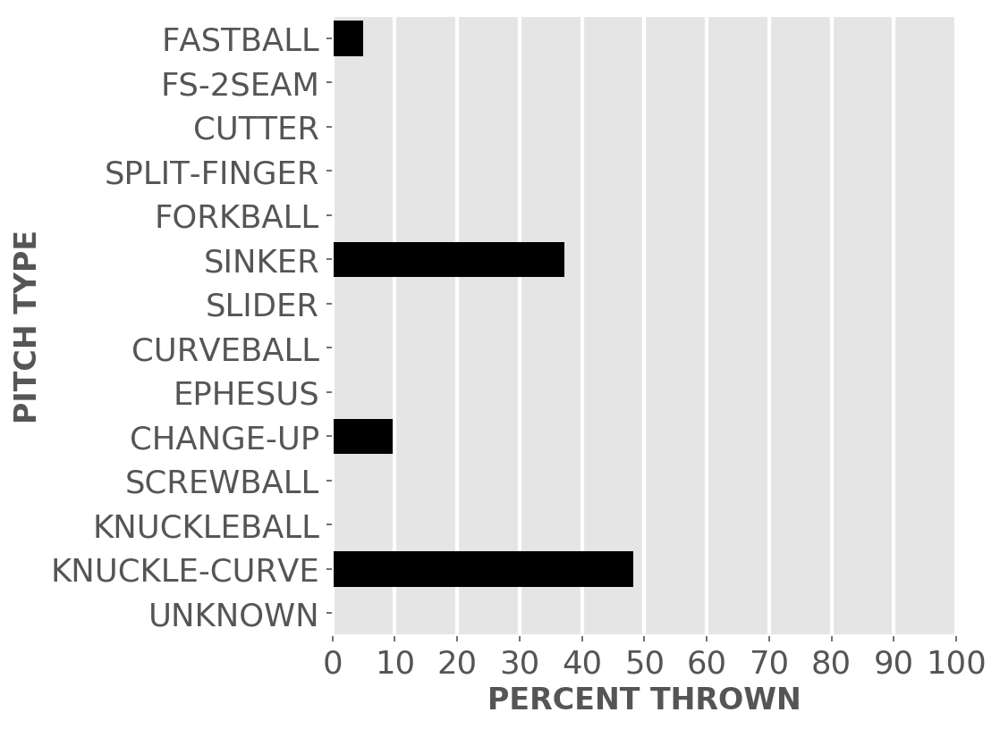Fastball = Four Seam and Unclassified Fastballs; FS-2seam = Two Seam Fastballs; Ephesuses are a really slow ball
| Average innings pitched | 0.7 |
| Strikeouts per 9 innings | 10.13 |
| Walks per 9 innings | 3.38 |
| Walks, hits per inning (WHIP) | 1.88 |
| Percent left on base | 40.0 |
| Percent first pitch strike | 61.5 |
Other measures
| Avg. run support | 5.0 |
| Opponents batting average | 0.333 |
| Batting avg. on balls in play | 0.444 |
| Fielding independent pitching | 2.27 |
| Win probability added (WPA) | 0.17 |
| Runs above replacement | 0.7 |
| WAR | 0.1 |
Michael Kopech #34, P
| Status (A = active) | A |
| Bats/Throws | R/R |
| Wins | 0 |
| Losses | 2 |
| ERA | 6.75 |
| Caught stealing | 2 |
| Complete games | 0 |
| Shutouts | 0 |
| Saves | 0 |
| Blown saves | 0 |
Pitch types
Fastball = Four Seam and Unclassified Fastballs; FS-2seam = Two Seam Fastballs; Ephesuses are a really slow ball
| Average innings pitched | 5.1 |
| Strikeouts per 9 innings | 8.44 |
| Walks per 9 innings | 5.06 |
| Walks, hits per inning (WHIP) | 1.5 |
| Percent left on base | 88.9 |
| Percent first pitch strike | 58.3 |
Other measures
| Avg. run support | 0.0 |
| Opponents batting average | 0.238 |
| Batting avg. on balls in play | 0.185 |
| Fielding independent pitching | 9.3 |
| Win probability added (WPA) | -0.12 |
| Runs above replacement | -3.7 |
| WAR | -0.3 |
Jimmy Lambert #58, P
| Status (A = active) | A |
| Bats/Throws | R/R |
| Wins | 0 |
| Losses | 0 |
| ERA | 0.0 |
| Caught stealing | 0 |
| Complete games | 0 |
| Shutouts | 0 |
| Saves | 0 |
| Blown saves | 0 |
Pitch types
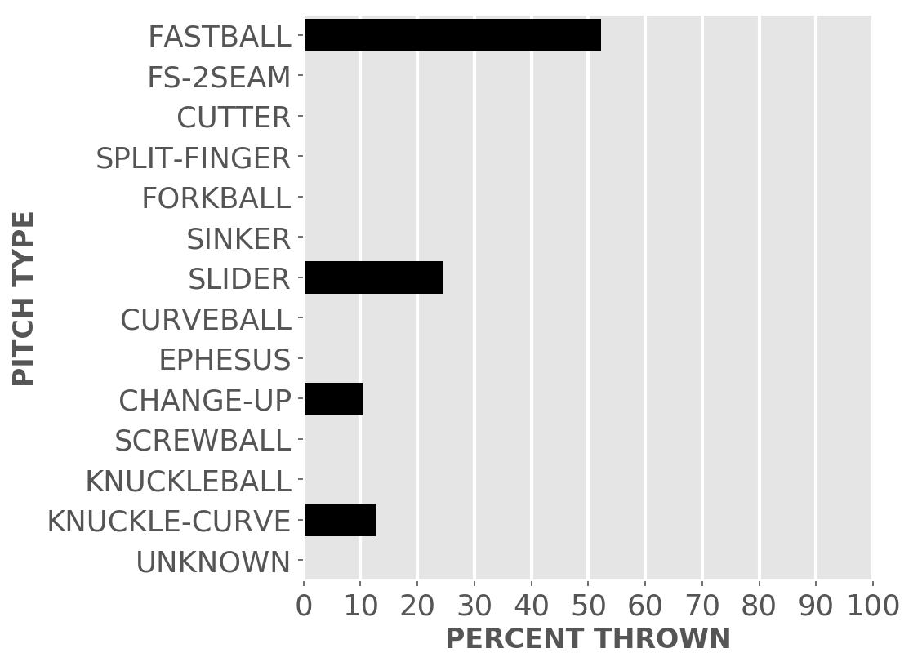Fastball = Four Seam and Unclassified Fastballs; FS-2seam = Two Seam Fastballs; Ephesuses are a really slow ball
| Average innings pitched | 0.8 |
| Strikeouts per 9 innings | 9.0 |
| Walks per 9 innings | 7.2 |
| Walks, hits per inning (WHIP) | 1.2 |
| Percent left on base | 83.3 |
| Percent first pitch strike | 42.9 |
Other measures
| Avg. run support | 3.0 |
| Opponents batting average | 0.118 |
| Batting avg. on balls in play | 0.167 |
| Fielding independent pitching | 3.8 |
| Win probability added (WPA) | -0.07 |
| Runs above replacement | 1.2 |
| WAR | 0.1 |
Reynaldo Lopez #40, P
| Status (A = active) | A |
| Bats/Throws | R/R |
| Wins | 0 |
| Losses | 0 |
| ERA | 10.8 |
| Caught stealing | 0 |
| Complete games | 0 |
| Shutouts | 0 |
| Saves | 1 |
| Blown saves | 0 |
Pitch types

Fastball = Four Seam and Unclassified Fastballs; FS-2seam = Two Seam Fastballs; Ephesuses are a really slow ball
| Average innings pitched | 0.8 |
| Strikeouts per 9 innings | 13.5 |
| Walks per 9 innings | 10.8 |
| Walks, hits per inning (WHIP) | 2.4 |
| Percent left on base | 76.9 |
| Percent first pitch strike | 72.2 |
Other measures
| Avg. run support | 3.0 |
| Opponents batting average | 0.286 |
| Batting avg. on balls in play | 0.286 |
| Fielding independent pitching | 11.8 |
| Win probability added (WPA) | 0.14 |
| Runs above replacement | -2.3 |
| WAR | -0.2 |
Lance Lynn #33, P
| Status (A = active) | A |
| Bats/Throws | S/R |
| Wins | 0 |
| Losses | 1 |
| ERA | 9.0 |
| Caught stealing | 2 |
| Complete games | 0 |
| Shutouts | 0 |
| Saves | 0 |
| Blown saves | 0 |
Pitch types
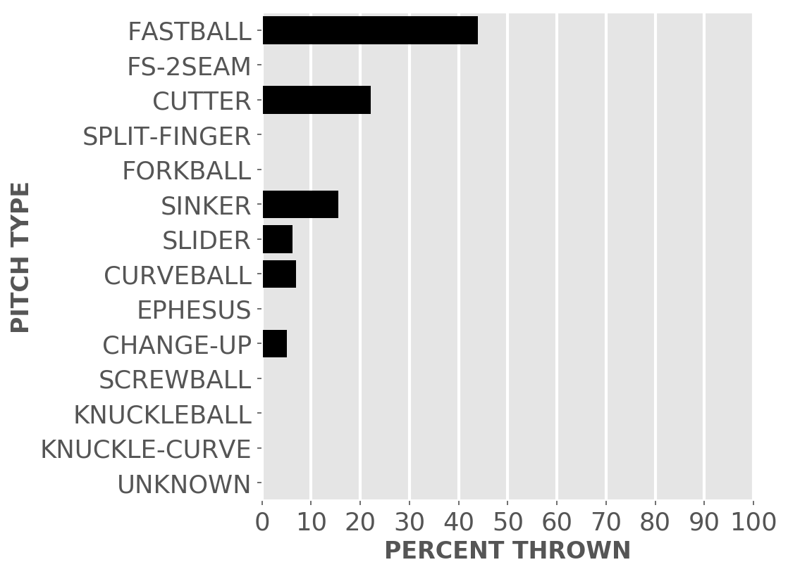Fastball = Four Seam and Unclassified Fastballs; FS-2seam = Two Seam Fastballs; Ephesuses are a really slow ball
| Average innings pitched | 5.0 |
| Strikeouts per 9 innings | 9.9 |
| Walks per 9 innings | 6.3 |
| Walks, hits per inning (WHIP) | 1.9 |
| Percent left on base | 69.4 |
| Percent first pitch strike | 58.3 |
Other measures
| Avg. run support | 6.0 |
| Opponents batting average | 0.3 |
| Batting avg. on balls in play | 0.32 |
| Fielding independent pitching | 8.8 |
| Win probability added (WPA) | -0.34 |
| Runs above replacement | -2.6 |
| WAR | -0.2 |
Gregory Santos #60, P
| Status (A = active) | A |
| Bats/Throws | R/R |
| Wins | 0 |
| Losses | 0 |
| ERA | 7.36 |
| Caught stealing | 0 |
| Complete games | 0 |
| Shutouts | 0 |
| Saves | 0 |
| Blown saves | 0 |
Pitch types
Fastball = Four Seam and Unclassified Fastballs; FS-2seam = Two Seam Fastballs; Ephesuses are a really slow ball
| Average innings pitched | 1.1 |
| Strikeouts per 9 innings | 9.82 |
| Walks per 9 innings | 2.45 |
| Walks, hits per inning (WHIP) | 2.45 |
| Percent left on base | 70.0 |
| Percent first pitch strike | 71.4 |
Other measures
| Avg. run support | 1.0 |
| Opponents batting average | 0.421 |
| Batting avg. on balls in play | 0.533 |
| Fielding independent pitching | 2.85 |
| Win probability added (WPA) | -0.1 |
| Runs above replacement | 0.6 |
| WAR | 0.1 |
Jesse Scholtens #62, P
| Status (A = active) | A |
| Bats/Throws | R/R |
| Wins | 0 |
| Losses | 0 |
| ERA | 3.0 |
| Caught stealing | 0 |
| Complete games | 0 |
| Shutouts | 0 |
| Saves | 0 |
| Blown saves | 0 |
Pitch types
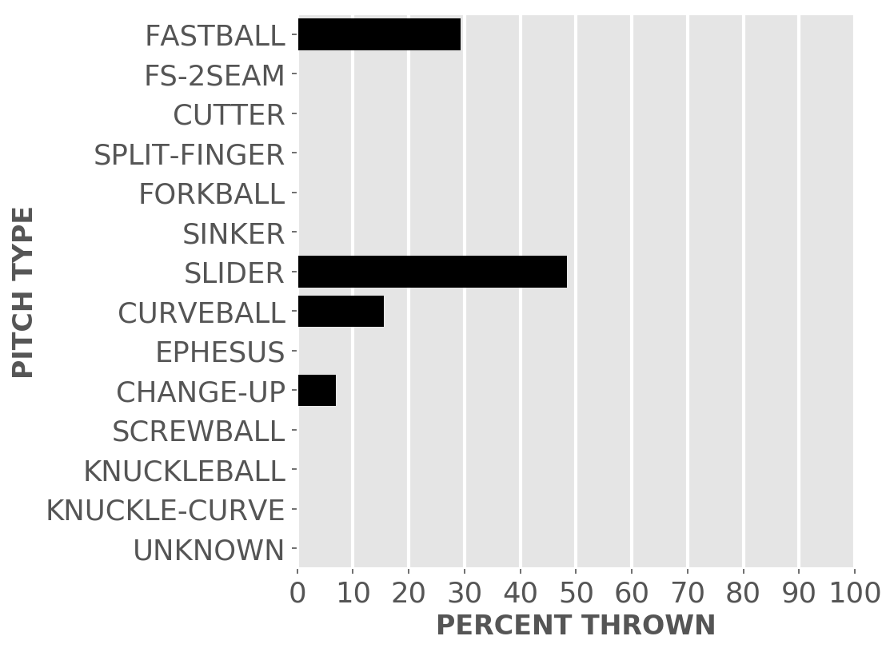Fastball = Four Seam and Unclassified Fastballs; FS-2seam = Two Seam Fastballs; Ephesuses are a really slow ball
| Average innings pitched | 3.0 |
| Strikeouts per 9 innings | 12.0 |
| Walks per 9 innings | 6.0 |
| Walks, hits per inning (WHIP) | 1.67 |
| Percent left on base | 80.0 |
| Percent first pitch strike | 64.3 |
Other measures
| Avg. run support | 2.0 |
| Opponents batting average | 0.25 |
| Batting avg. on balls in play | 0.375 |
| Fielding independent pitching | 2.73 |
| Win probability added (WPA) | 0.01 |
| Runs above replacement | 0.3 |
| WAR | 0.0 |
JUMP TO TOP